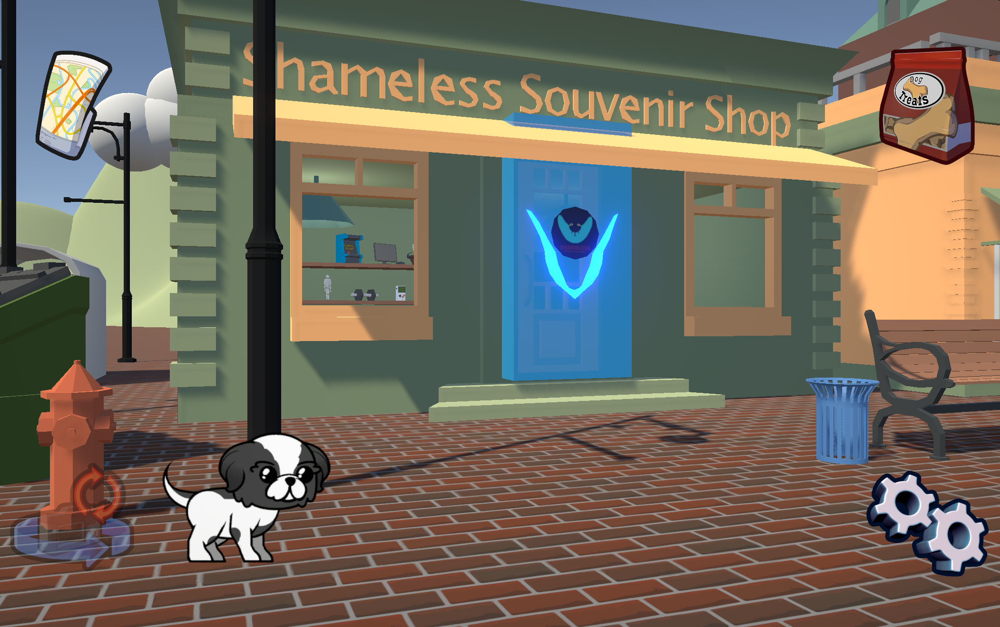
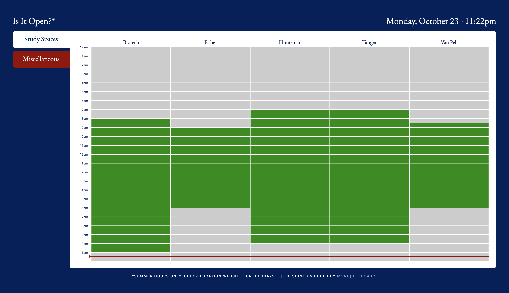
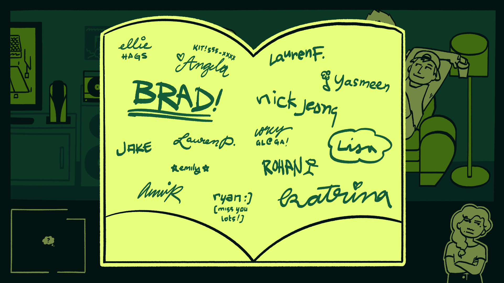
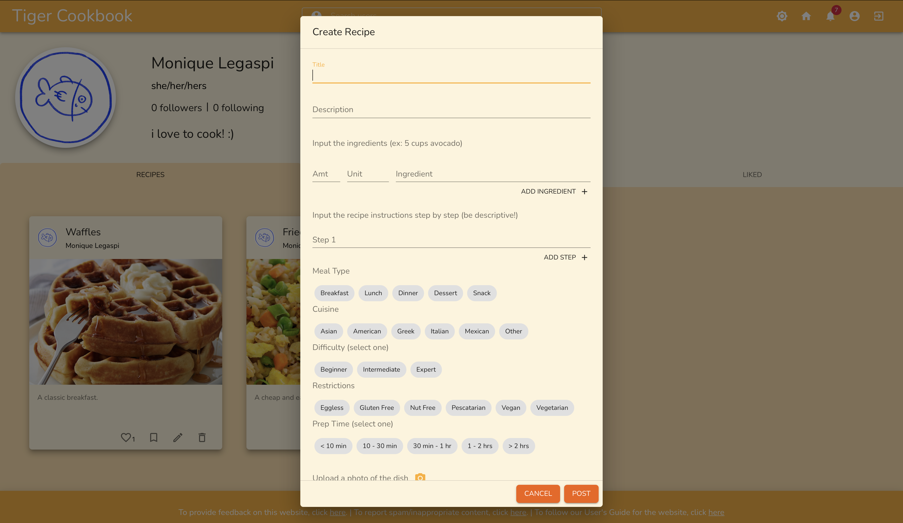
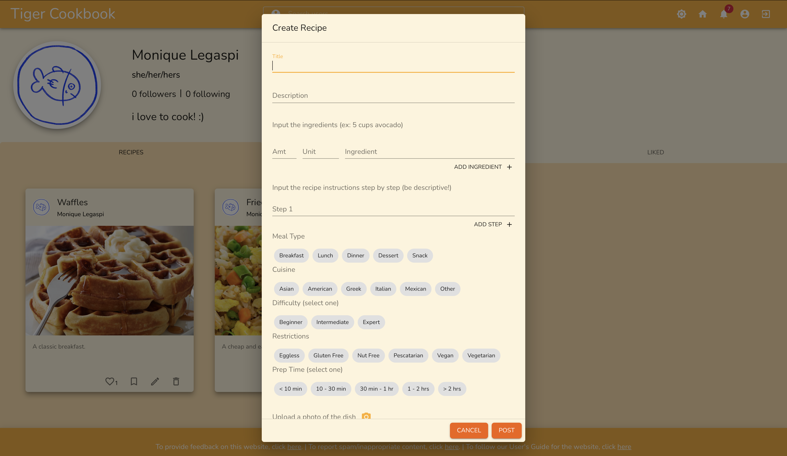

Shameless Boulevard
DATE: fall 2024 - spring 2025
TECH: Unity/C#, Yarn Spinner
PURPOSE: work
Ongoing project in development for Shameless Product Placement.
An immersive, gamified catalogue intended to showcase in-game product placement opportunities for potential company sponsors and investors.
As Lead Programmer, I am spearheading the design and development of Shameless Boulevard.
This project takes cues from first-person exploration games such as What Remains of Edith Finch,
inviting the player to stroll along a pedestrian-street reminiscent of the real Church Street in Burlington, VT
and learn about the various possibilities for collaboration with Shameless Product Placement.
Though much of my work revolves around being the sole developer, I also wrote a majority of the script,
building upon the storyline proposed by our 3D artist and
collaborating with the company's co-founder to ensure accuracy with regards to company facts and product offerings.
Built in Unity WebGL, Shameless Boulevard is playable on both desktop and mobile devices.
View project here.


CGTA
DATE: summer 2023
TECH: Python, OpenAI API
PURPOSE: independent study project
TA assistive tool for CIS 5990: Independent Study.
Created program that, utilizing OpenAI API,
encodes Piazza/EdSTEM archives and generates answers to questions from students in CG@Penn classes.
Read final report here.
Read paper here.
Is It Open?
DATE: summer 2023
TECH: HTML/CSS, JavaScript
PURPOSE: personal project
Visual reference of summer operating hours for frequented locations across University of Pennsylvania campus (& beyond).
References UPenn official web identity branding guide
for colors & typefaces.
Can be accessed here.

Knit-It
DATE: spring 2023
TECH: Maya, Python, MEL
PURPOSE: school project
With a classmate, I created a Maya Python plug-in for CIS 6600: Advanced Topics in Computer Graphics,
based on the paper
"Stitch Meshes for Modeling Knitted Clothing with Yarn-level Detail"
by Yuksel et al.
Given a quad-based mesh, the user may populate the surface of the mesh with stitch faces,
resulting in a mesh that appears knitted.
Stitches may also be merged into a single valid mesh which can be animated.
This project demonstrates my strength with coding in Python,
as well as my ability to integrate multiple languages into one product
that requires the files to be in constant communication with one another.
I am also particularly proud of my writing in the design documentation,
as we were determined to make it as accessible as possible for anyone who wanted to use the artist tool.
Knit-It! was a two-person project, with my partner and I working closely on most aspects of this tool.
However, the following parts were largely developed by me:
-
User Interface: I designed and programmed the plugin's menu window in Maya,
allowing the user to easily change stitchface types and density.
-
Stitch Face Warping & Orientation: Programmed stitch faces to warp themselves
to match the shape of corresponding irregular quad faces on the reference mesh
and to be in line with the up-vector of the mesh.
-
Python Translation: Translated all of our code pertaining to stitch face manipulation
from MEL into Python to allow for easier implementation of certain essential functions.
Read design document here.
PaddleBall
DATE: spring 2023
TECH: Unity, C#, Vive Pro
PURPOSE: school project
As a final project for for CIS 5680: Game Design Practicum,
I worked with classmates in a team of three to create a Portal-like puzzle game prototype for VR in Unity.
The player explores an abandoned spy facility, solving puzzles using a magnetic paddle-ball in order to escape.
The paddleball can be used to retrieve objects, teleport, and swing between platforms.
This project shows off my level design skills (crucially, in a collaborative setting),
both in terms of functionality - the player gradually learns the different uses of their new paddle-ball tool
through solving the puzzles in each level - and overall visual clarity/consistency.
Though the project was intensely collaborative with all parties working in tandem on almost every feature,
I mostly took charge of the following:
-
Visual Development: Through multiple sketches and feedback from teammates,
I determined the environment in which the game takes place and directed how levels should be crafted
in line with our desired aesthetic.
-
Asset Design: In a similar vein, I (with some tweaking from teammates) created assets in Unity and Maya
that fit our retro-futuristic tech theme and clarified player goals.
-
Documentation: I wrote much of our design document,
detailing game functionality as well as our work process.
-
Code Organizing: I fixed bugs of varying sizes, placed comments where necessary, and fitted our Unity asset files into proper folders for easy reference.
Read design document here.
FLY, ICARUS
DATE: spring 2023
TECH: Unreal, Blueprints, C++
PURPOSE: school project
Unreal game prototype created in team of 2 for CIS 5680: Game Design Practicum.
Side-scrolling survival game that utilizes mouse-scroll to propel
player character into the air. Proximity to sun depletes HP,
and collisions with sea monsters/ocean water kills instantly.
Player may also collect power-ups to restore HP and increase speed.
This project showcases my skills with Unreal—particularly Blueprints,
upon which all functionality is built.
We also iterated upon the design multiple times to make it more accessible
(less confusing health system, easier to control player, etc.) to non-gamers,
and we worked tirelessly to make the design beautiful, appealing, and engaging.
This being a highly collaborative partner project allowed us to work closely on all aspects of the game,
though naturally each of us had our strengths. I spearheaded the following:
-
Visual Development: Through several concept illustrations,
I designed the overall aesthetic of our game.
Since our game conceit is based on the Greek myth of Icarus,
I heavily referenced Greek pottery for shapes, colors, and monster types.
-
Asset Design: I illustrated assets in line with the above guidelines.
-
Scroll Functionality: I worked on Icarus's scroll-to-fly,
tweaking the sensitivity over multiple iterations and
experimenting with different functions in Blueprints.
-
Obstacle Movement: Followed a similar process as above, changing how sea monsters
move in and out of the water to provide a satisfying challenge for players.
Read design document here.
See visual development concepts here.
Mini Minecraft
DATE: fall 2022
TECH: C++, GLSL, Qt Creator
PURPOSE: school project
For the final project for CIS 5600: Interactive Computer Graphics, I worked in a group of 3 to build a simple Minecraft clone.
We rigidly divided the work; my contributions include:
-
Chunking: I developed the “chunk” functionality that allows the terrain to be rendered in large sections
according to the Player's world position, with vertex data interleaved in a single VBO, and with
overlapping cube-faces being ignored to speed up the process.
-
Multithreaded Terrain Generation: I added multi-threaded functionality using the QRunnable library,
creating and destroying Chunks of land within a certain radius asynchronously around the Player as they move.
-
Additional Biomes: I designed four biomes (mountain, plain, desert, island) with distinct block-types
and noise-generated heightmaps, blending them between one another on the map using linear interpolation.
Mocap Blend
DATE: fall 2022
TECH: Mocap setup, MotionBuilder
PURPOSE: school project
Motion-blending exercise for CIS 5620: Computer Animation.
Collected motion-capture data from classmates, then blended actions together
and rigged to 3D model in MotionBuilder.
Mini Maya
DATE: fall 2022
TECH: C++, GLSL, Qt Creator
PURPOSE: school project
As part of CIS 5600: Interactive Computer Graphics, I created a rudimentary mesh-manipulation program, similar to Maya.
By understanding and utilizing a half-edge data structure, I programmed features such as
edge splitting, face triangulation, Catmull-Clark subdivision, and face extrusion for an imported OBJ.
The half-edge structure may also be traversed using keyboard shortcuts,
and the positions of vertices and colors of faces may be altered upon selection.
Additionally, the application allows for mesh skinning based on an imported JSON skeleton.
Alongside coding the functionality myself, I created the interface window myself in Qt.
This project showcases my ability to manipulate half-edge structures in different ways using C++,
as well as my user interface design abilities in Qt.
OpenGL Fun
DATE: fall 2022
TECH: C++, GLSL, Qt Creator
PURPOSE: school project
As part of CIS 5600: Interactive Computer Graphics, I created an OpenGL shader application.
I wrote various vertex and fragment shaders to apply both surface and post-processing effects to various 3D models.
The model may be rotated and moved around, with the effects persisting in the viewport.
This project demonstrates my ability to program shaders, as well as my proficiency in C++ and OpenGL Shader Language.
Surface shader effects that I programmed include Lambert, Blinn-Phong, matcap, color gradient, and vertex deformation.
Post-process shader effects that I programmed include greyscale (with vignette effect), Gaussian blur, Sobel, bloom, and Worley noise.
Scene Graph
DATE: fall 2022
TECH: C++, Qt Creator
PURPOSE: school project
Scene graph application for CIS 5600: Interactive Computer Graphics.
Features an articulated doll whose components can be scaled, rotated, and translated,
as well as the ability to add components that can be similarly manipulated.
monique-link
DATE: spring 2022
TECH: HTML/CSS, JavaScript, Java
PURPOSE: school project
Personal Neocities website for VIS 208: Graphic Design: Link. Contains links to projects created
as part of class assignments, including visual poetry variations, a productivity-oriented microseasons
calendar, and an interview with artist Jessica Le.
Can be viewed here.
left unsaid
DATE: spring 2022
TECH: HTML/CSS, JavaScript
PURPOSE: school project
Undergraduate senior thesis, created in partial fulfillment of Princeton University's Certificate in Visual Arts.
A point-and-click game/visual novel about tying up loose ends.
Includes interactive elements, side-quests, and multiple endings.
Desktop-only.
Can be played here.
Access repository here.
See gallery installation here.

BUGCATCHER!
DATE: fall 2021
TECH: HTML/CSS, JavaScript, Java
PURPOSE: school project
Senior independent work project, created in partial fulfillment of Princeton University's BSE degree in Computer Science.
A game-website designed to teach students in Princeton's introductory CS course (COS 126) how to debug their
Java code. Desktop-only.
Can be played here.
Access written report here.
Mercedes-Benz USA Chatbot
DATE: summer 2021
TECH: Figma, CSS, React.js
ROLE: ui/ux lead
PURPOSE: internship
Personal concierge bot created for MBUSA website while interning at Publicis Sapient. Bot can answer FAQ's, assist user in finding specific models, and schedule test drives at a dealership in user's preferred zip code. Primarily focused on accessible design, this bot is WCAG 2.0 AA-compliant.
KING OF THE TOWN
DATE: spring 2021
TECH: HTML/CSS, Procreate
ROLE: tech/art lead
PURPOSE: school project
Final assignment for STL209: Transformations in Engineering and the Arts. A comedic digital exploration of personality quizzes and choose-your-own-adventure narratives. Intended for display on three separate touch-screen monitors.
Can be played here.
Access repository here.
Hello, World!
DATE: spring 2021
TECH: HTML/CSS, three.js
ROLE: landscape/interface
PURPOSE: school project
Final assignment for COS426: Computer Graphics. Play as a nature photographer and explore the environment, collecting pictures of the various animals that inhabit the area.
Can be played here.
Access repository here.
ex•qui•site•cor•pus
DATE: winter 2021
TECH: HTML/CSS, JavaScript, Agora API
ROLE: solo
PURPOSE: personal project
Online game centered around collaborative storytelling. Uses Agora API to implement video chat and real-time messaging.
Can be played here.
Access repository here.
Tiger Cookbook
DATE: fall 2020
TECH: React.js, Node.js, Firebase, Algolia
ROLE: varied (mainly design)
PURPOSE: school project
Final assignment for COS 333: Advanced Programming Techniques. A social media platform centered around posting and sharing recipes within the Princeton community.
Can be viewed here.


 
